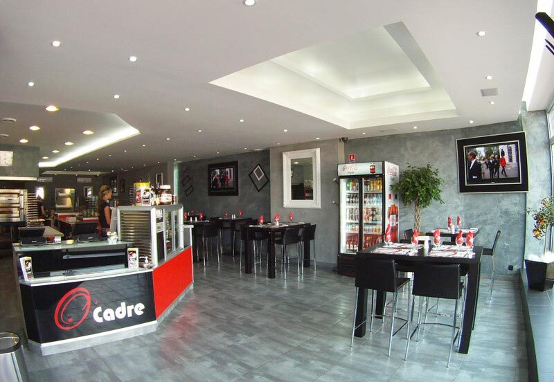

Événements & contact
Pour chaque événement, O'Cadre a la solution
Un repas d'affaires, un banquet pour un départ à la retraite, une soirée spéciale, un apéritif festif, un comité d'entreprise… Faites-nous part de vos désirs et de vos besoins, nous mettrons tout en œuvre pour vous satisfaire.
Demande de devis
Parlez-nous de votre projet
Nombre de convives, date, lieu, formule souhaitée : plus vous nous en dites, plus notre proposition sera juste.
Plans d'accès